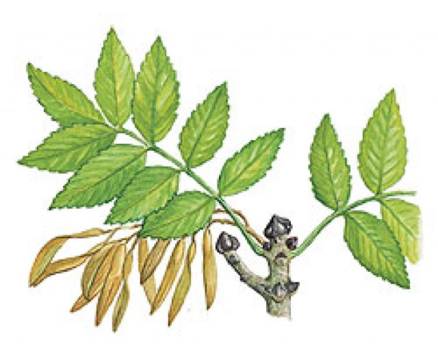
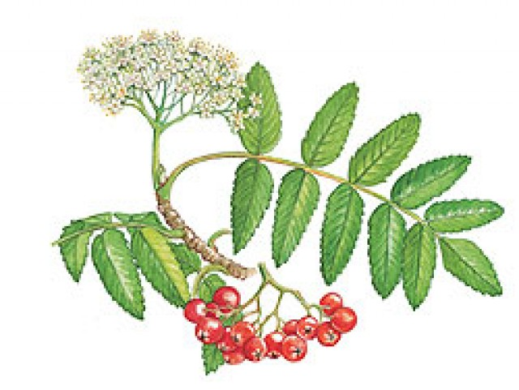

Leaves
These are not single leaves but are compound and made up of several "leaflets".
They are lance shaped with slightly toothed edges. Leaflets are arranged in pairs with an odd
one at the end
Bark
The bark is smooth and grey with fissures that appear as it grows older. The colour of the bark
is thought to give the tree it's name.
Buds
Distinctive black winter buds produce shoots and dense clusters of small purple flowers.
Flowers and seeds
Can be male, female or both. Purple catkin female flowers ripen and grow into seeds called "keys".
So called because they look like old fashioned keys. They spin in the wind so are also called "spinners".
Rowan (mountain ash) trees
Rowan trees are easily mistaken for ash but they are not susceptible to chalara and should not be reported.
The main differences include:
- the leaves grow on alternate pairs on the twig, where ash leaves are opposite each other
- Rowan trees generally only grow to around 10 metres as opposed to the 40 metres ash can climb to
- bark is purplish as opposed to the ash's greenish tint
- where the ash has single winged seeds in bunches rowan has berries which ripen to a red colour
